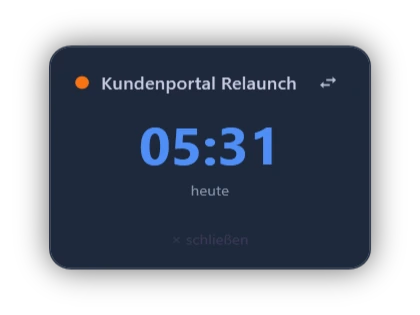
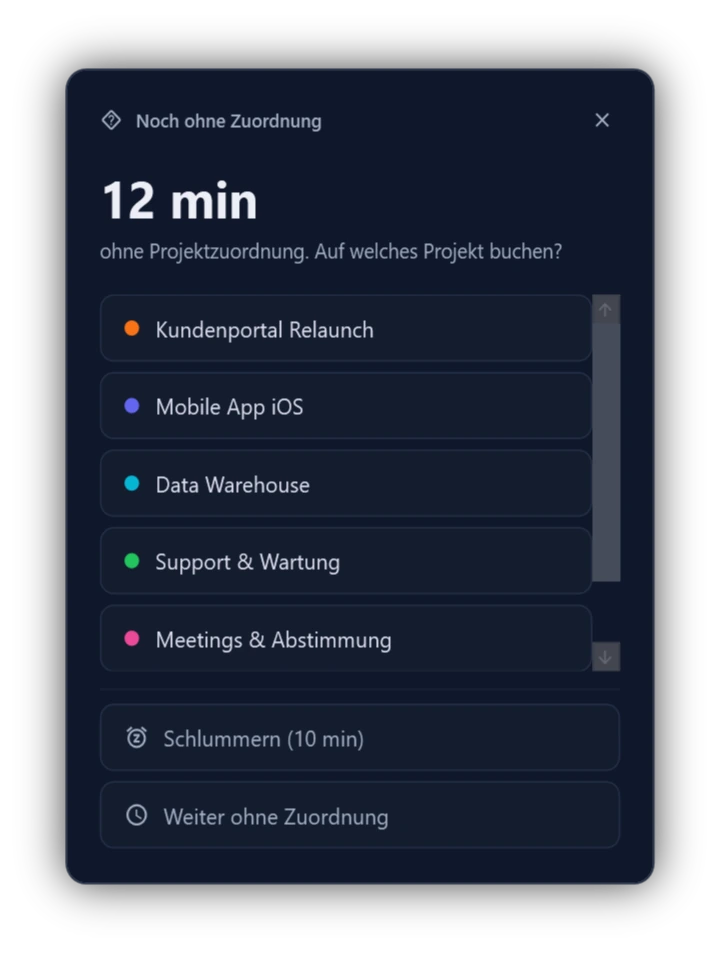
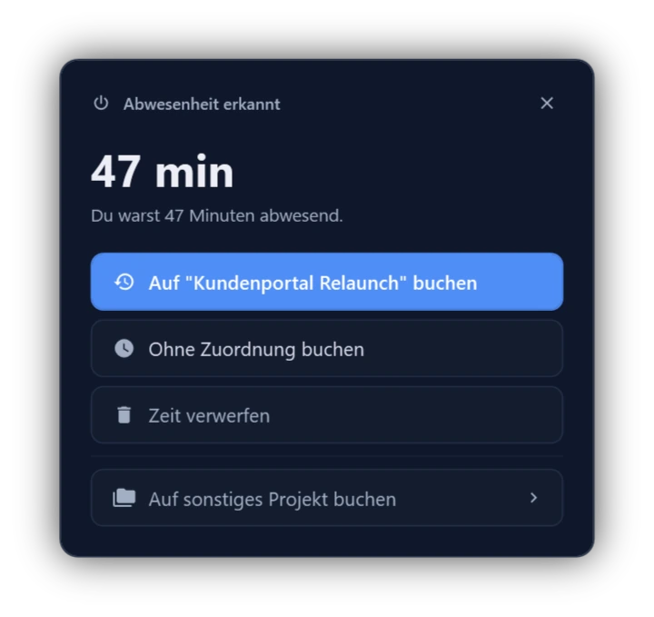
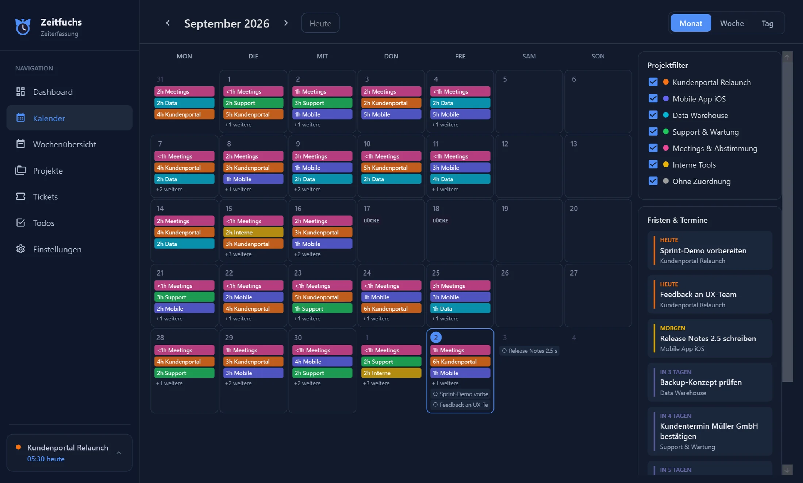
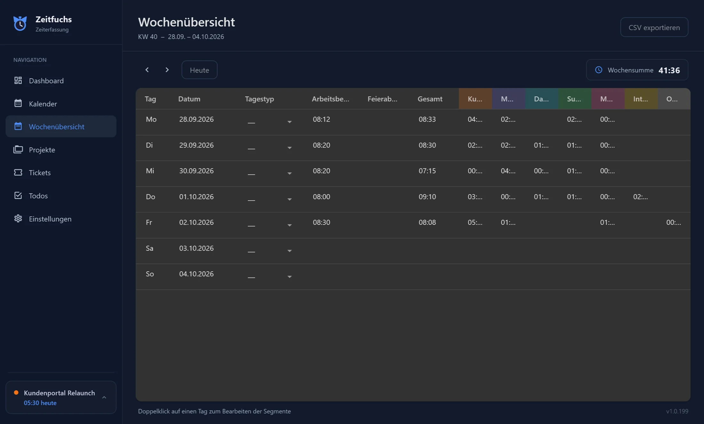
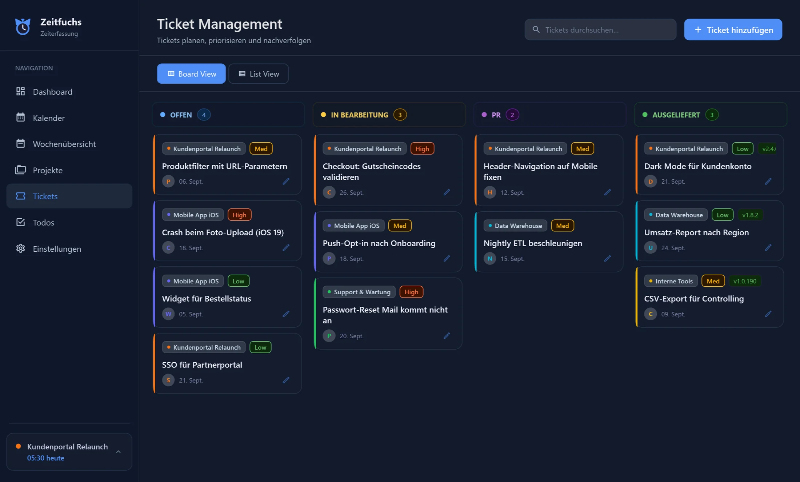
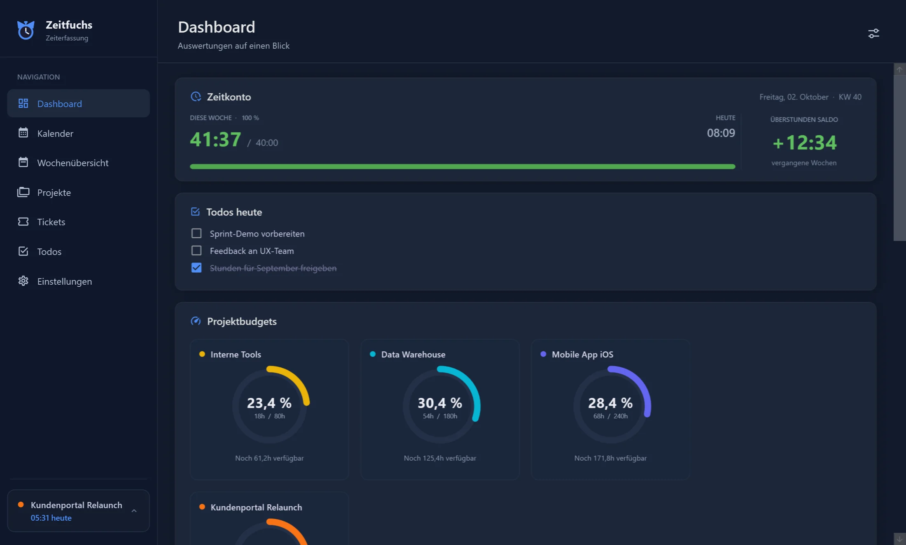

Zeiterfassung für Windows
Projektzeit erfassen. Ganz automatisch.
Zeitfuchs startet mit deinem PC und zeichnet auf, woran du arbeitest. Dein aktuelles Projekt steht in der Taskleiste, ein Klick wechselt es – und läuft Zeit ohne Projekt, erinnert dich Zeitfuchs.
Für Windows 10 und 11 · ca. 85 MB · Installer von GitHub
Kennst du das?
Stunden nachtragen kostet Zeit.
Und vergessene Stunden kosten Geld.
Monatsende, die Rechnung muss raus – und der Dienstag ist ein schwarzes Loch.
Der Timer lief noch auf Kunde A, obwohl du längst für Kunde B gearbeitet hast.
Jedes Tool will ein Konto, ein Abo pro Person und deine Daten in der Cloud.
Automatisch
PC an. Zeitfuchs läuft.
Kein Start-Knopf, kein Stempeln. Zeitfuchs startet mit Windows und zählt ab der ersten Minute mit.
- Läuft ab Systemstart – bis du ein Projekt wählst, sammelt sich die Zeit unter „Ohne Zuordnung“.
- Wechseln mit einem Klick: im Taskleisten-Widget, im Tray-Menü oder unten links im Hauptfenster.
- Tray-Menü für Arbeitsbeginn, Pause und Feierabend.

Taskleisten-Widget
Dein Projekt. Immer im Blick.
Das Widget sitzt direkt in der Windows-Taskleiste und zeigt, worauf gerade gebucht wird. So vergisst du das Umschalten nicht mehr.
- Ein Klick auf den Pfeil öffnet deine Projekte – auswählen, fertig.
- Heutige Zeit pro Projekt direkt daneben.
- Alternativ als schwebendes Timer-Widget rechts unten.
Erinnerung
Nichts geht verloren.
Arbeitest du, ohne dass ein Projekt läuft, fragt Zeitfuchs nach ein paar Minuten nach, wohin die Zeit gehört.
- Nachträglich zuordnen mit einem Klick – oder zehn Minuten schlummern lassen.
- Abwesenheit erkannt: Nach Standby oder Pause entscheidest du, ob die Zeit zählt.


Kalender
Jede Minute. Richtig zugeordnet.
Monat, Woche oder Tag – farbig nach Projekt. Und wenn etwas nicht stimmt, korrigierst du es im Tagesdetail.
- Projektfilter, Lücken und Überschneidungen werden markiert.
- Fristen & Termine aus deinen Todos gleich daneben.
- Alles bearbeitbar: Abschnitte verschieben, ergänzen, Notizen anhängen.

Abrechnen
Jede Stunde abrechenbar.
Die Wochenübersicht zeigt pro Tag Arbeitsbeginn, Feierabend, Gesamtzeit und eine Spalte je Projekt. Ein Klick exportiert alles als CSV – für Excel, deine Rechnung oder das System deiner Firma.
- Urlaub, Krankheit, Feiertag, frei direkt in der Zeile markieren.
- Überstundenkonto wird jede Woche automatisch abgerechnet.
- Budgets je Projekt mit Tacho – du siehst, wann es eng wird.

Organisiert
Tickets, Todos & Budgets.
Ein Board für deine Aufgaben, Todos mit Fälligkeit – direkt neben deiner Zeiterfassung, ohne zweites Tool.
- Ticket-Board mit Offen, In Bearbeitung, PR und Ausgeliefert – mit Priorität, Link, Version und Verlauf.
- Todos mit Datum und Projekt, sichtbar im Dashboard und Kalender.

Dein Look
Drei Farbschemata. Drei Tachos.
Automotive mit Zeigernadel, Schiefer mit Fortschrittsring, Sand mit Balken – jeweils hell oder dunkel.

So geht's
In zwei Minuten startklar.
Herunterladen & installieren
Installer starten – kein Konto, keine Anmeldung, keine Kreditkarte.
Projekte anlegen
Name, Farbe, auf Wunsch Kostenstelle und Stundenbudget. Mehr braucht es nicht.
Einfach arbeiten
Zeitfuchs zählt mit. Gewechselt wird mit einem Klick im Taskleisten-Widget.
Alles drin
Und noch mehr.
Mit Windows starten
Erfassung ab dem Einschalten, ganz ohne Zutun.
Sicherung per Klick
Datenbank jederzeit als Sicherungskopie speichern.
Zwei Widgets
In der Taskleiste oder schwebend rechts unten.
Erinnerung
Meldet sich, wenn Zeit keinem Projekt zugeordnet ist.
Abwesenheit erkannt
Standby und Pausen werden erkannt, du entscheidest.
Kalender
Monat, Woche, Tag – mit Projektfilter und Fristen.
Tagesdetail
Abschnitte, Notizen, Arbeitsbeginn und Feierabend korrigieren.
CSV-Export
Die Woche mit einem Klick als Tabelle.
Überstundenkonto
Wochen-Soll, Arbeitstage, Urlaub und Feiertage inklusive.
Projektbudgets
Stundenbudget je Projekt mit Tacho im Dashboard.
Tickets & Todos
Board mit Verlauf, Todos mit Fälligkeit.
Hell, dunkel, drei Themes
Jedes mit eigenem Tacho-Stil.
Datenschutz
Deine Zeit. Deine Daten.
Zeitfuchs speichert alles in einer Datenbank auf deinem Rechner. Es gibt keinen Server, der deine Zeiten sieht – und kein Konto, das gekündigt werden müsste.
FAQ
Häufige Fragen
Was kostet Zeitfuchs?
Nichts. Zeitfuchs ist kostenlos, ohne Abo und ohne versteckte Kosten.
Läuft Zeitfuchs auf dem Mac oder unter Linux?
Nein, Zeitfuchs gibt es für Windows 10 und 11.
Wo liegen meine Daten?
In einer Datenbank in deinem Windows-Benutzerordner (unter AppData\Local\ZeitfuchsData). Den genauen Speicherort zeigen dir die Einstellungen. Die Daten verlassen deinen Rechner nicht.
Muss ich jedes Mal auf Start drücken?
Nein. Mit „Mit Windows starten“ läuft Zeitfuchs ab dem Einschalten mit. Du wählst nur noch das Projekt – im Widget oder im Tray-Menü.
Was passiert, wenn ich vergesse umzuschalten?
Dein aktuelles Projekt steht immer im Taskleisten-Widget. Läuft Zeit ohne Projekt, erinnert dich Zeitfuchs. Und im Tagesdetail kannst du jeden Abschnitt nachträglich einem anderen Projekt zuordnen.
Wie bekomme ich meine Stunden in die Rechnung oder ins Firmensystem?
Über den CSV-Export in der Wochenübersicht. Die Datei öffnest du in Excel oder übernimmst sie in jedes Programm, das CSV lesen kann.
Bekomme ich Updates?
Ja, automatisch. Zeitfuchs meldet sich, sobald eine neue Version bereitliegt. Deine Daten bleiben dabei erhalten.
Windows warnt beim Installieren – ist das normal?
Windows SmartScreen warnt bei Programmen, die noch nicht oft heruntergeladen wurden. Über „Weitere Informationen“ und „Trotzdem ausführen“ geht es weiter. Der Installer kommt direkt aus dem offiziellen GitHub-Repository.
Feedback
Sag mir, was fehlt.
Zeitfuchs ist ein Ein-Personen-Projekt, und ich lese jede Nachricht. Wünsche, Fehler, Lob – alles hilft. Name und E-Mail sind freiwillig; ohne sie bleibt dein Feedback anonym.
Hör auf, Stunden nachzutragen.
Installieren, Projekte anlegen, arbeiten. Zeitfuchs kümmert sich um den Rest.
Kostenlos für Windows herunterladenWindows 10 und 11 · ca. 85 MB · Alle Versionen